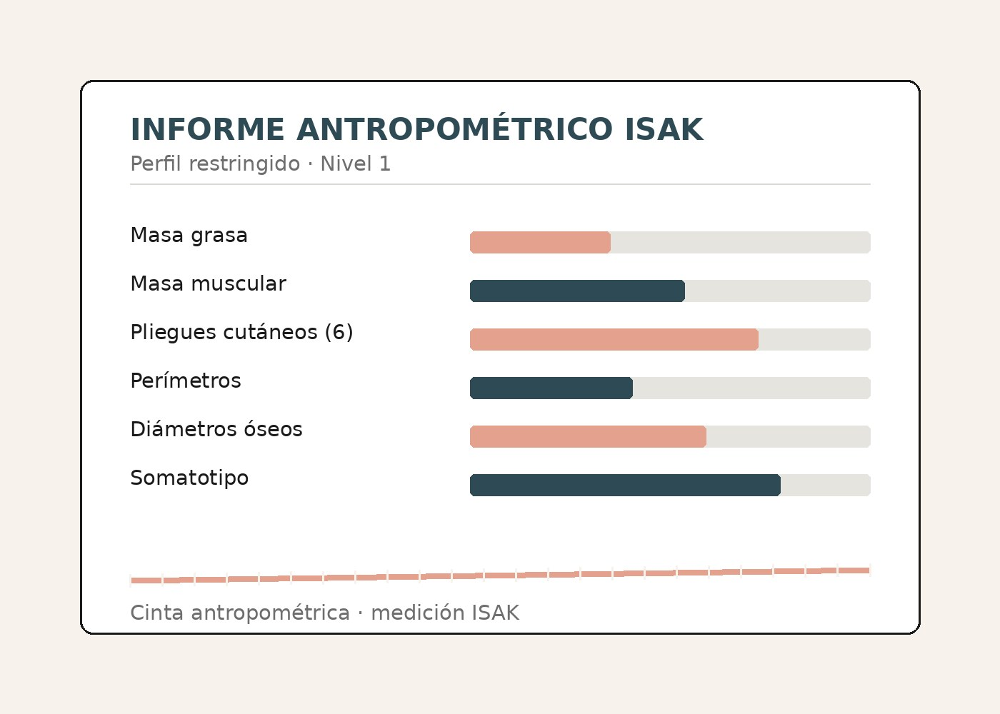

Nutricyt
Tu salud comienza desde adentro.
Nutriendo tus células, potenciando tu salud.
Nutrición clínica personalizada basada en evidencia científica.
{kind=link}
{kind=link}
Sobre mí
Shelsea García
Soy Shelsea García, Nutricionista-Dietista egresada de la Pontificia Universidad Católica Madre y Maestra (PUCMM), con formación orientada a la nutrición clínica, preventiva y comunitaria.
Durante mi formación realicé prácticas clínicas en la Consulta Nutricional Universitaria de la PUCMM, el Hospital Regional Universitario José María Cabral y Báez, y el Hospital Infantil Regional Universitario Dr. Arturo Grullón, participando en la evaluación, intervención y seguimiento nutricional de pacientes pediátricos y adultos. También he participado en jornadas comunitarias de promoción y prevención de la salud, realizando tamizajes de hipertensión arterial, diabetes mellitus, riesgo cardiovascular y riesgo metabólico, además de educación alimentaria dirigida a comunidades vulnerables.
Actualmente desarrollo mi práctica profesional a través de NUTRICYT y como nutricionista clínica en el Consultorio de Nutrición y Dietética de la PUCMM, con un enfoque basado en la evidencia científica, la educación nutricional y la atención personalizada.
Egresada PUCMM
Pontificia Universidad Católica Madre y Maestra.
ISAK Level 1 Anthropometrist
Exequátur 220-26 · Medición antropométrica bajo protocolo internacional.
Nutrición clínica, preventiva y comunitaria
Evaluación, intervención y seguimiento nutricional.
Máster en Nutrición Clínica (en curso)
Universidad Europea.
¿En qué puedo ayudarte?
Áreas de atención
Cada abordaje comienza con una evaluación nutricional individualizada, adaptada a tus necesidades y objetivos.
Explora cada área para conocer nuestro enfoque.
Pérdida de peso
Un proceso sostenible, sin dietas restrictivas ni resultados exprés.
Conocer másAumento de peso
Ganar peso de forma saludable también requiere una estrategia.
Conocer másDiabetes mellitus tipo 2
Manejo nutricional del azúcar en sangre, en conjunto con tu médico.
Conocer másHipertensión arterial
Estrategias alimentarias para acompañar el control de la presión arterial.
Conocer másDislipidemias
Ajustes en el tipo de grasas y fibra de tu alimentación.
Conocer másSíndrome metabólico
Un abordaje integral cuando varios factores de riesgo se combinan.
Conocer másNutrición deportiva
Antropometría ISAK aplicada a tu disciplina, sin prometer un número en la báscula.
Conocer másServicios
Consultas pensadas para tu proceso
Cada consulta tiene un propósito claro dentro de tu proceso. Para reservar, escríbeme directo por WhatsApp.
-
01
Evaluación inicial
Revisamos tu historia clínico-nutricional completa, antecedentes personales y familiares, y hacemos la primera antropometría para definir tus objetivos y el punto de partida de tu plan.
-
02
Asesoría personal
Diseño tu plan de alimentación individualizado, ajustado a tus gustos, rutina y presupuesto, con educación nutricional continua.
-
03
Detalles de estilo de vida
Integramos sueño, actividad física, manejo del estrés y rutina diaria — muchas veces ahí está la clave de que un plan se sostenga.
-
04
Seguimiento
Revisamos tu evolución, tomamos una nueva medición antropométrica y ajustamos el plan según cómo haya ido.
“Nutriendo tus células, potenciando tu vida.”
— Shelsea García, Nutricionista-Dietista
Antropometría ISAK
Así luce tu informe antropométrico
Cada evaluación ISAK se traduce en un informe claro que puedes seguir consulta a consulta.
- Composición corporal: masa grasa, muscular y ósea
- 6 pliegues cutáneos y perímetros corporales
- Diámetros óseos y somatotipo
- Comparativa de evolución entre consultas
¿Lista para empezar?
Tu primera consulta puede ser esta semana
Blog
Notas sobre nutrición
Recetas, consejos prácticos y artículos sobre nutrición basados en evidencia.
Preguntas frecuentes
Antes de reservar
¿La consulta es solo virtual o también presencial?
Ambas modalidades están disponibles. Puedes reservar tu cita presencial en consultorio o una consulta virtual por videollamada, según lo que te resulte más cómodo.
¿Cómo funciona la consulta inicial?
Revisamos tu historia clínico-nutricional, hábitos actuales y objetivos, y se realiza la evaluación antropométrica. Con esa información se diseña tu plan inicial y los próximos pasos de seguimiento.
¿Cuáles son las formas de pago?
En consulta presencial se acepta efectivo. Para consultas virtuales, el pago se realiza por transferencia bancaria antes de la cita.
¿Qué debo preparar antes de mi consulta?
Si tienes exámenes de laboratorio recientes, tráelos o envíalos antes de la cita. Para la evaluación antropométrica, usa ropa cómoda y ligera.
Contacto
Conversemos
Escríbenos y te respondemos a la brevedad, o coordina directo por WhatsApp.